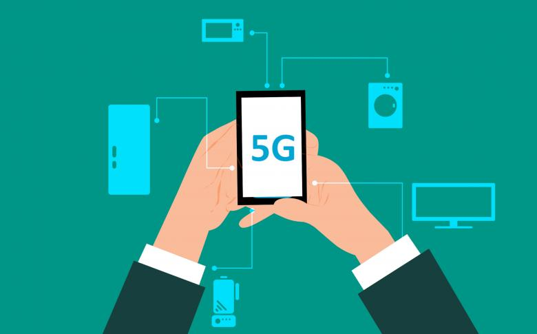

Seminarski rad: 5G mreža - Dobre i loše strane
Kada se pojavio 2019., 5G je mnogo zainteresirao ljude. 5G je peta generacija mobilnih mreža. Zbog 100 puta veće brzine od svojeg prethodnika 4G, 5G nam omogućuje stvari koje do sada nikada nisu viđene. Možemo gledati filmove u vrhunskoj kvaliteti, igrati online igre bez trzaja i preuzimati velike datoteke u trenu. Mnogu su se zapitali ima li ovaj novi izum čovječanska ikakve nuspojave ili je u potpunosti savršen.
Prva dobra strana 5G-a već je navedena u uvodu, a to je brzina prijenosa. Za skidanje datoteke veličine 500Mb na 4G mreži potrebno nam je 20 sekundi, a prosječna brzina preuzimanja je 25Mb/s. Za skidanje iste te datoteke na 5G mreži potrebno nam je tek 1,6 sekundi, a prosječna brzina preuzimanja je 300Mb/s. Također, 5G mreža ima puno manje latencije(engl. latency) od prethodnika(vrijeme potrebno da podaci putuju od jedne točke do druge unutar mreže), dok 4G mreže imaju latenciju od oko 200 milisekundi, 5G mreže redovito postižu latenciju od samo jednu milisekundu. Druga stvar kod 5G mreža je bolji kapacitet(engl. Bandwith). 5G mreže koriste spektar frekvencija ispod 3GHz, pa čak i do preko 100GHz. Upravo ta širina spektra značajno povećava ukupni kapacitet 5G mreže kao i brzinu prijenosa podataka. To omogućuje da mreža djeluje na širem spektru propusnosti. Rezultat prije navedenog je povećani broj uređaja koje mreža može istovremeno podržavati što 5G mrežu čini odličnom za korištenje na mjestima gdje će ju koristiti veliki broj korisnika. Kod 5G mreža dolazi do manje stope grešaka. Razlog tome je to što 5G mreže koriste poboljšani adaptivni sustav modifikacije i kodiranja(MCS) za prijenos podataka koji je učinkovitiji od onog korištenog u 4G i 3G mrežama. Kod 5G mreže, kada stopa blokovnih pogrešaka(BER) poraste, prijenosnik smanjuje brinu veze sve dok BER ne padne na prihvatljivu razinu. Zadnja dobra strana koju ću spomenuti je ta da 5G mreža koristi manje prijenosnike u odnosu na svoje prethodnika. To omogućuje njihovo diskretno postavljanje na zgrade, drveće ili druga prigodna mjesta. Zbog manjih dimenzija i niže energetske potrošnje, 5G infrastruktura može biti lakše integrirana u postojeće urbane ili prirodne prostore bez značajnog utjecaja na okoliš. Mnogi dan danas misle kako su 5G prijenosnici loše za zdravlje pojedinaca koji žive blizu njih, no razlog za takvo razmišljanje ne postoji. Znanstvenici nisu pronašli nikakve dokaze koji potvrđuju da je 5G štetan za ljude.
Prva loša strana 5G-a je sigurnost. Prethodnici 5G mreža imale su manje hardverskih prometnih točaka kontakta što je pridonijelo jednostavnosti provjeri i održavanja, no 5G sustavi temeljeni na softveru imaju više točaka za usmjeravanje prometa. Sve te točke treba nadzirati što je puno teže nego kod 4G mreža. Veća propusnost podataka također smanjuje efikasnost provjere sigurnosti neke mreže. Sve manje proizvođača tehnologije daje prednost sigurnost na internetu(engl. cybersecurity), televizori, pametne brave, pametni hladnjaci i razni drugi uređaji mogu biti prijetnja sigurnosti 5G mreže. Veliki problem je i infrastruktura 5G mreže. Za premještanje na 5G mrežu, kompanije moraju nadograditi svoju opremu, te potrošiti mnogo vremena i novaca za to. Mnogi gradovi su uveli 5G mreže, no to ne znači da je 5G mreža svugdje dostupna. Mnoga ruralna područja diljem Hrvatske i cijelog svijeta nemaju pristup 5G mreži zbog cijene prijenosnika. I zadnji koji ću navesti i po meni najveći problem 5G mreža je putanja valova. Visokofrekventni valovi na kojima 5G signali putuju lako se blokiraju običnim objektima poput zgrada, drveća ili nosivih zidova. U urbanim sredinama to može predstavljati veliki problem jer nemamo koristi od najbrže mreže ako je signal od iste pre slab.
5G mreža nam donosi mnoge prednosti, ali i nove izazove. 5G je tek početak nove ere tehnologije, ere gdje skoro pa svi imaju pristup internetu i svim njegovim mogućnostima. Ništa nije savršeno kao ni 5G, te je potrebno još mnogo vremena za njegov potpuni razvitak. Kako razvitak u smislu poboljšanja sigurnosti, tako i u smislu poboljšanja infrastrukture.
Laboratorijske vježbe
Ovdje možete pronaći PDF dokumente sa laboratorijskim vježbama vezanim za predmet RM. Kliknite na poveznice kako biste preuzeli ili pregledali vježbe.
LV2_Osnovna_Analiza_Mreznog_Prometa.pdf
LV5_IPv6_Adresiranje
LV7_Konzolni_Pristup_i_Temeljna_Konfiguracija_Usmjernika
Preuzmi LV7: Konzolni Pristup i Temeljna Konfiguracija Usmjernika PDF